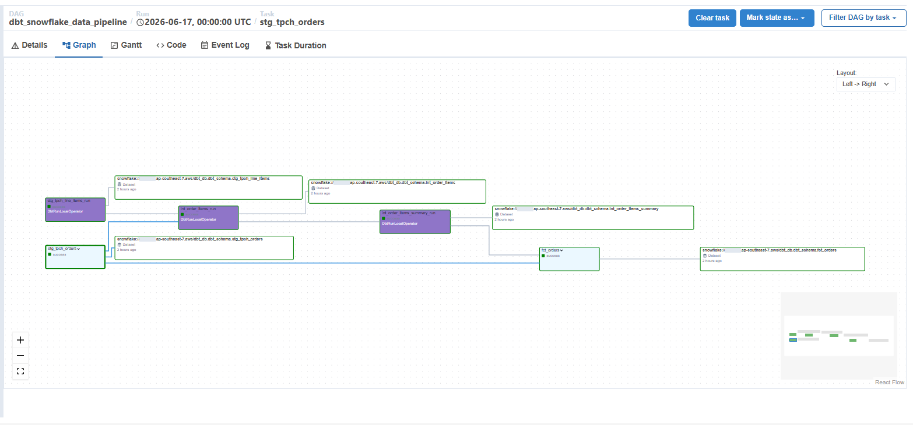
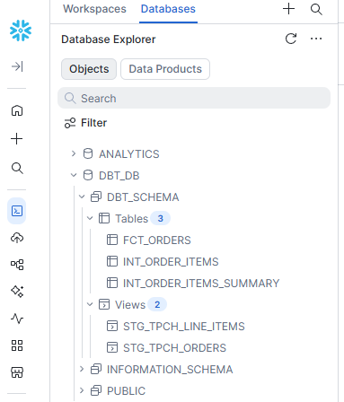

Automated End-to-End Cloud ELT Pipeline & Dimensional Modeling
1. Business Pain-Points, Dataset & Objectives
unique, not_null, FK integrity)
When business analysts and Finance teams query normalized transactional tables manually via ad-hoc SQL scripts, different reports end up using inconsistent join logic, breaking dashboards on schema drift, and delaying KPI refreshes. The goal was to replace fragile manual SQL with an automated, governed ELT platform delivering BI-ready Kimball Star Schema marts (fct_orders) on Snowflake.
| Business Pain-Point | Risk to BI & Stakeholders | Engineering Solution | Business Value Delivered |
|---|---|---|---|
| Repeated Complex Joins & Metric Drift | Analysts rewriting multi-table TPC-H joins produce conflicting revenue and order KPIs across reports. | Medallion Staging (stg_tpch_orders) + pre-joined Kimball Star Schema mart (fct_orders) via dbt SQL & dbt_utils. |
Single Source of Truth enabling consistent self-serve BI reporting. |
| Manual SQL Refreshes & Environment Drift | Scheduled reports stall or break when scripts run out of order or local Python/dbt versions diverge. | Containerized Astro CLI + Airflow + Astronomer Cosmos inside an isolated dbt_venv. |
Reproducible, Automated Refreshes with clear task-level lineage visibility. |
| Silent Broken Dashboards | Duplicate keys or missing foreign keys leak corrupt totals straight into executive dashboards. | Automated unique, not_null, and PK/FK referential gates halting bad runs prior to exposure. |
Trustworthy Data Before Reporting—bad data is blocked upstream. |
2. System Architecture & Workflow

- Storage & Compute (Snowflake Data Cloud): Serves as the central data warehouse, decoupling compute from storage and isolating raw TPC-H landing zones from clean analytical marts.
- Transformation (dbt Core &
dbt_utils): Implements Medallion Staging (stg_tpch_orders) and Kimball Star Schema Mart layers (fct_orders) via modular SQL models. - Orchestration (Apache Airflow & Astronomer Cosmos): Dynamically parses dbt lineage into granular Airflow DAG tasks inside an isolated
dbt_venv, triggering runs and schema checks sequentially. - Reproducibility (Docker & Astro CLI): Ensures identical runtime dependencies across local development and containerized deployment.
3. Data Quality Assurance & Testing
To guarantee the principle of "Trustworthy data before reporting", continuous automated testing was integrated into the pipeline:
- Enforced Primary Key integrity (
uniqueandnot_nullconstraints) across staging and mart entities. - Validated Referential Integrity relationships between Fact and Dimension tables.
- Automated task halting upon detecting anomalous schema changes or ingestion discrepancies.
4. Key Outcomes & Scope Notes
The pipeline eliminated manual script execution via containerized Airflow scheduling, materialized pre-joined Kimball Star Schema marts (fct_orders) to reduce repetitive multi-table joins in downstream BI workflows, and enforced automated dbt schema/referential quality gates prior to analytical consumption. Note: Timing claims were omitted because no controlled cross-warehouse cache benchmark was logged.


DBT_DB.DBT_SCHEMA staging views and fct_orders Star Schema mart tables.